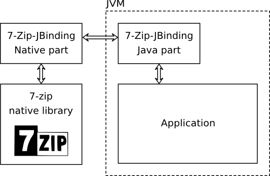

What's this all about?
7-Zip-JBinding is a java wrapper for 7-Zip C++ library. It allows extraction of
many archive formats using a very fast native library directly from java through JNI. Features:
- Extract
| 7-Zip |
Zip |
Rar |
Tar |
Split |
Lzma |
Iso |
HFS |
GZip |
| Cpio |
BZip2 |
XZ |
Z |
Arj |
Chm |
Lhz |
Cab |
| Nsis |
Ar/A/Lib/Deb |
Rpm |
Wim |
Udf |
Fat |
Ntfs |
- Create/update
- It's cross-platform. Binaries are available for
| › MS-Windows 32/64 |
› Darwin Mac OS X |
| › Linux: |
- Intel 32/64
- ARMv5 (armel) *
- ARMv6 (RaspberryPi 2) *
- ARMv7 (armhf) *
- ARM64 *
|
* WARNING: not part of '-AllPlatforms' or '-AllLinux' packages
- In-memory archive extraction/creation/update
- Full support for extraction of password protected and in volumes splitted archives
- Full support for creation of password protected archives
- Artifacts on Maven central (groupId: net.sf.sevenzipjbinding)
- 23 example code snippets
- Over 8599 JUnit tests: Dashboard
- Planned: Create volumed archives
- Planned: Create/Extract more archive formats supported by 7-Zip
-
Known bug: JVM crash in case of OutOfMemory exception.
Workaround: Increase heap using -Xmx parameter.
How does it work?
The 7-Zip-JBinding consists of two parts: the java part and the native part. The java part introduces
a cross-platform java interface of the 7-Zip library. The native part of
7-Zip-JBinding communicates with the java part through the java jni interface and uses the corresponding native 7-Zip
interface to perform operations.

It's really simple!
Getting number of packed items in an archive:
private int getNumberOfItemsInArchive(String archiveFile) throws Exception {
IInArchive archive;
RandomAccessFile randomAccessFile;
randomAccessFile = new RandomAccessFile(archiveFile, "r");
archive = SevenZip.openInArchive(ArchiveFormat.ZIP,
new RandomAccessFileInStream(randomAccessFile));
int numberOfItems = archive.getNumberOfItems();
archive.close();
randomAccessFile.close();
return numberOfItems;
}
For the sake of simplicity all error handling was skipped.
Continue with first steps for more examples and explanations.
News
19 February 2020:
This release is a small present to you for my 40th birthday :)
Want to give something back? ;)
7-Zip-JBinding Release: 26.03-2.4
CVE-2024-11477 resolved (7-Zip Zstandard decompression, severity HIGH, CVSS 7.8):
fixed as of 26.03-2.4 – the bundled 7-Zip engine now postdates the upstream fix released in
7-Zip 24.07. No known security issues in the current release.
Details: issue #72.
Release, extraction & compression, cross-platform, based on 7-Zip 26.03
- New engine: 7-Zip 26.03 (previously 23.01) – native Zstandard decompression,
resolves CVE-2024-11477, and many upstream format/bug fixes
- 7-Zip-JBinding now requires Java 8 or higher (previously Java 1.5)
- New feature: XZ compression & update support
(API +
Snippets); XZ extraction crash fixed (CRC64 init)
- New platform: macOS universal – one binary for Intel (x86_64) and
Apple Silicon (arm64)
- New platforms: musl / Alpine Linux – amd64, ARM64 and ARMv7
- Runtime platform auto-detection reworked:
- ARM level detection (ARMv5/v6/v7, soft/hard-float) via /proc + ELF headers
- glibc vs musl detection
- ARM, musl and macOS builds are now included in the -AllPlatforms package
(12 platforms in one jar)
- Fixed: wrong file modification times under multi-threaded extraction on non-UTC systems
(long-standing thread-safety bug in the POSIX compatibility layer)
- Bugfix: JNI local reference leak during extraction
(PR #66)
- Bugfix: initialization race on concurrent first use in one JVM
(issue #24)
- Bugfix: misleading error message when java.io.tmpdir is invalid
(issue #43)
- 8845 JUnit tests, run per platform with the platform jar AND the AllPlatforms jar
(12 platforms: QEMU VM farm, Alpine containers, real ARM hardware, macOS CI)
7-Zip-JBinding Release: 16.02-2.01
Release, extraction & compression, cross-platform, based on 7zip/p7zip 16.02
- First official release
-
New feature: Bind 7-Zip 16.02
- DEB archive renamed to AR supporting archive extension: .ar, .a, .deb, .lib
- PropID.LINK
renamed to PropID.SYM_LINK
- Full RAR5 extraction support (format name: ArchiveFormat.RAR5)
- password protected archives
- archives with encrypted headers
- archives splitted in volumes
- Create/Update password protected 7z & Zip archives (with header encryption for 7z)
-
ARM builds
(WARNING: not part of '-AllPlatforms' or '-AllLinux' packages)
- ARMv5 (armel)
- ARMv6 (RaspberryPi 2)
- ARMv7 (armhf)
- ARM64
- Support for FAT (file system)
- Support for NTFS (file system)
- Support for HFS (file system)
- Support for SYM_LINK & HARD_LINK properties
- Improving performance by using GCC 5.3 for Windows builds
- Improved archive type auto-detection (algorithm + performance)
- Bugfix: Bug #18 (null as password causes JVM crash)
- Bugfix: Bug #21 (7z-archive in Tar)
- Complete rewrite of the test framework
6 Oktober 2015: 7-Zip-JBinding Release: 9.20-2.00beta
Release candidate, extraction & compression, cross-platform, based on 7zip/p7zip 9.20
-
New feature: Create/update archives
- Supported archives: 7z, Zip, Tar, GZip, BZip2
- Archive format specific or generic compression APIs
- JavaDoc
+
Snippets
- More than 1500 additional JUnit tests
- New feature: Get 7-Zip-JBinding and 7-Zip version information
- New platform: ARM
- Improvement: SHA1 hashes are used to verify cached binaries in the temp directory
- Improvement: Performance boost on Linux (using -O2 optimization )
-
API changes
- Bugfix: #17 WIM archive format contains Udf comment
- Add compressed web site (website.zip) to the distribution
16 Januar 2013: 7-Zip-JBinding Release: 4.65-1.06rc-extr-only
Release candidate, extraction only, cross-platform, based on 7zip/p7zip 4.65
- Feature: WIM format support + tests
- Feature: Initialization performance boost. Don't delete extracted native libraries
in the temporary directory (specified by -Djava.io.tmpdir=<dir>) and use those later during
subsequent 7-Zip-JBinding initializations.
- Test: Test cross-platform encoding functionality
- Bugfix: Get ride of the dependency to USER32.DLL improving performance and robustness
- Bugfix: 7-Zip-JBinding compiles now with gcc 4.7 (Bug ID: 3593757)
Special thanks to Daniel Santos for the provided patch!
- Bugfix: Simple Interface returns wrong CRC (Bug ID: 3535546)
Special thanks to M. Hamer
24 April 2012: 7-Zip-JBinding Release: 4.65-1.05rc-extr-only
Release candidate, extraction only, cross-platform, based on 7zip/p7zip 4.65
- Bugfix: Multipart CAB-archive extraction without implementing IArchiveOpenVolumeCallback
- Bugfix: A general protection fault raises when trying to list files in passworded RAR archive. The password length is 30+ characters.
- Feature: Initialize native module within a AccessController#doPrivileged block
8 March 2010: 7-Zip-JBinding Release: 4.65-1.04rc-extr-only
Release candidate, extraction only, cross-platform, based on 7zip/p7zip 4.65
- Bugfix: it was not possible to open some archives over 4GB
Special thanks for IKVM developer Jeroen Frijters for finding this bug!
9 December 2009: 7-Zip-JBinding Release: 4.65-1.03rc-extr-only
Release candidate, extraction only, cross-platform, based on 7zip/p7zip 4.65
- Binary version for MacOS 64 bit (java 6)
- Support for multi-platform jars. Multi-platform releases:
- AllPlatforms - all available native libraries in a single jar
- AllWindows - native libraries for Windows 32 and 64
- AllLinux - native libraries for Linux 32 and 64
- AllMac - native libraries for Mac 32 and 64
- Initialization reworked. See JavaDoc for SevenZip for more information.
- Integration test for all platforms for single and multiple platform distributions
- Improved ISevenZipInArchive.extract(): Sort indices, if not already sorted, bug fixes.
- DEB format support + tests
- RPM format support + tests
- UDF format support + tests
- New Code snippets: opening multi-part 7z and RAR archives
- Source code repository: moved from svn to git
9 October 2009: 7-Zip-JBinding Release: 4.65-1.02rc-extr-only
Bugfix release (Release candidate, extraction only, cross-platform, based on 7zip/p7zip 4.65)
- Binary version for Windows 64 XP and above (amd64)
- NSIS format support + tests
- New method ISevenZipInArchive.getArchiveFormat() returns format of the opened archive,
even if archive format auto-detection was used.
- Better performance for archive format auto-detection
1 September 2009: 7-Zip-JBinding Release: 4.65-1.01rc-extr-only
Bugfix release (Release candidate, extraction only, cross-platform, based on 7zip/p7zip 4.65)
- API change was necessary to fix a bug:
- net.sf.sevenzipjbinding.ISevenZipInArchive.extract(int[], boolean, IArchiveExtractCallback):
- the first parameter "int[]" is optional now. If null value passed all archive items will be extracted.
It if possible to exclude particular items later on using IArchiveExtractCallback call back. Returning null
out of net.sf.sevenzipjbinding.IArchiveExtractCallback.getStream method will skip extraction/testing.
- CAB format support + tests
- LZH format support + tests
- CHM format support + tests
- Dashboard project added: http://my.cdash.org/index.php?project=7-Zip-JBinding
- Bugfix: crash, if access archive object out of a call back method
31 July 2009: 7-Zip-JBinding Release: 4.65-1.0rc-extr-only
The first cross-platform release of Java wrapper for 7-Zip library was build!
Main features of 4.65-1.0rc-extr-only (Release candidate, extraction only, cross-platform, based on 7zip/p7zip 4.65)
- Extraction of 7z, Zip, Tar, Split, Rar, Lzma, Iso, HFS, GZip, Cpio, BZIP2, Z, Arj
- Support for password protected and volumed archives
- Compression method auto detection
- Simple extraction interface
- Cross-platform. Binaries available for
- Windows 32
- Linux 32/64
- Mac OS X
- Over 3000 JUnit tests extraction of archive formats: 7z, Arj, BZip2, Cpio, GZip, ISO, Lzma, Rar, Tar, Z, Zip
- 7-Zip-JBinding requires Java 1.5 or higher
30 January 2009: 7-Zip-JBinding Release: 0.4.1
- Bug fixed: 2525877 (Memory leak)
4 January 2009: 7-Zip-JBinding Release: 0.4
- Full rework of c++ code: thread safe JNI-calls, correct exception handling between threads
- Bug #2441909 fixed (Can't extract encrypted 7-Zip files)
- New open/extract method for crypted archives and items (standard and simple interface)
- JUnit tests for the extraction of crypted archives and exception handling
- New examples on the home page
Old web sites
|